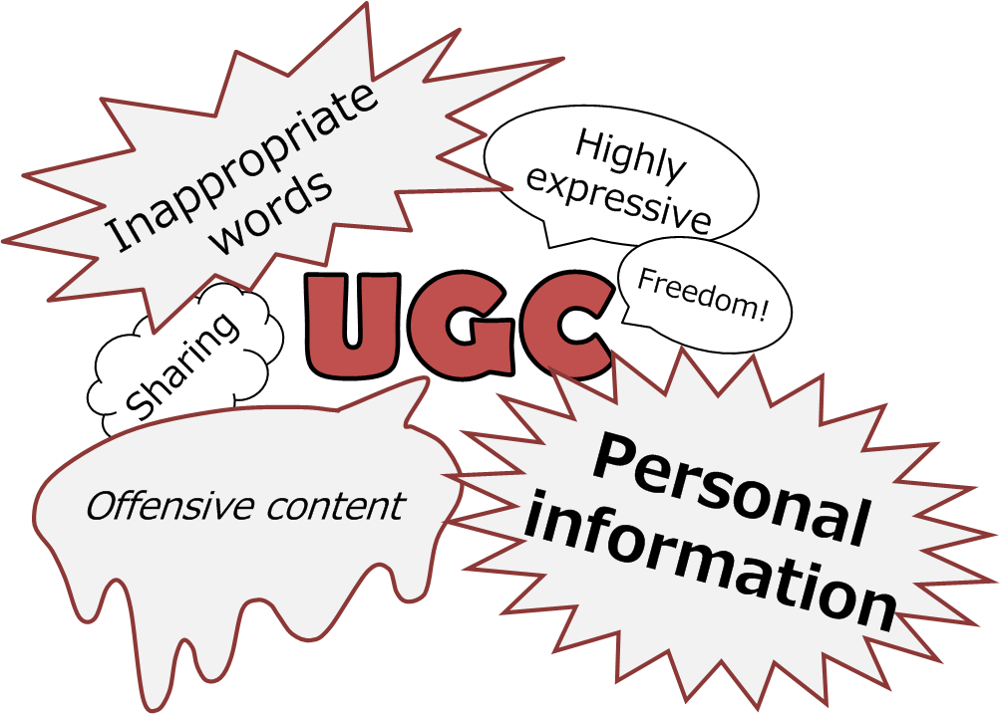
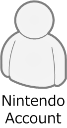
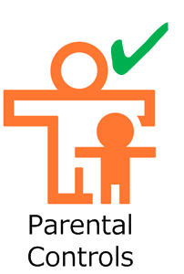
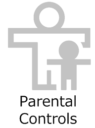
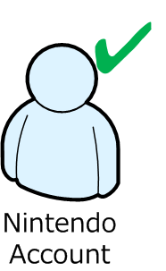

UGC is appealing because users can freely create it. The downside of that appeal is the fact that it may contain personal information, content that infringes on the rights of others, and content that offends other users; and these can lead to unintended outcomes. Users — especially younger users, who may be unused to handling information or may have undeveloped network literacy skills — may exchange UGC for purposes that you, the application developers, do not intend. To prevent that kind of UGC exchange, Nintendo plans to provide Nintendo Switch users with countermeasures on both the system side and the application side. These countermeasures include restricting the use of sensitive UGC, and having the parent or guardian control younger users' exchange of UGC. See below for details. It is your application's responsibility to implement the restrictions in Application-side support.
On Nintendo Switch, users younger than age 13 are considered "children." Nintendo Switch has features that the parent or guardian (a user age 18 or above) can use to restrict the following two types of communication, and thereby prevent children from exchanging sensitive UGC without parental permission.
The user must have a Nintendo Account in order to use internet communication features in Nintendo Switch applications. In other words, because the parent or guardian must consent to the creation of child-directed Nintendo Accounts on Nintendo Switch, by withholding consent they can prevent the child from using internet communication and from exchanging UGC via internet communication.
See the Account Guide for details of the account framework.
On Nintendo Switch, "sensitive UGC" is defined as UGC exchanged via communicating with others. Nintendo Switch provides a parental controls item restricting the exchange of this kind of UGC. If this parental control is turned on for one or more applications, it prevents users playing that Nintendo Switch system from communicating with others inside those targeted applications, even if the users have Nintendo Accounts. Because the "Communicating with Others" parental controls item can be set separately for each individual application, it becomes possible for users to apply very fine-grained handling. For example, if they want to allow the exchange of profile cards in app A but disable the exchange of drawings in app B, they can.
For these restrictions to be truly useful, it is your responsibility to implement the following support on the application side.
To prevent children from exchanging sensitive UGC, your application must restrict the following three things.
The parental controls item "Communicating with Others" can be set separately for each individual application. If this item is restricted for your application, you must not allow the user to freely communicate with others inside your application.
Communicating with others means that users are able to exchange UGC with each other using Nintendo Switch communication features. "Communicating with Others" is not limited to chat and direct messages; it also includes features such as those where users can make their hand-drawn illustrations public on a server and comment on others' illustrations, or features where users can publish the short comment in their profile to others. If your application handles UGC that may, in effect, be used by users to have a conversation with one another, you must apply this parental controls restriction to this UGC regardless of how frequently users can exchange this UGC in your application. Refer to the examples from released applications in Table 3-1 Examples of "Communicating with Others" to determine whether the UGC exchanged in your application allows users to have a conversation with one another.
| Application name | Types of UGC exchanged | Method of exchange |
|---|---|---|
|
UGC that assumes two-way communication (chat, direct messages, etc) |
||
| StreetPass Mii Plaza for Nintendo 3DS | Text | Sends messages via StreetPass. Users are also able to send personalized messages to anyone they have met via StreetPass at least once before. |
| Devil's Third for Wii U | Users send and receive long-text emails with their friends via internet communication. | |
| Users engage in short-text chat in the matchmaking lobby during internet communication. | ||
| Tomodachi Life for Nintendo 3DS | This application uses StreetPass to send and receive Mii characters which carry messages to other users. Users reply to these messages via SpotPass by handing their own messages to the Mii characters they receive. | |
| Mario Kart 8 for Wii U | Text, images | Users post gameplay videos on Miiverse, then inside this application they receive comments on the videos via internet communication. |
| Super Smash Bros. for Wii U | Audio | Users can voice chat with their friends during internet communication. |
| Swapnote (NOA) / Nintendo Letter Box (NOE) for Nintendo 3DS | Images, photos, audio | Sends and receives swapnotes to/from the user's friends. The swapnotes may contain hand-drawn illustrations, handwritten text, photos, and audio. |
|
UGC that is sent or published as one-way communication (illustrations posted on a server, short comments in profiles, etc) |
||
| Animal Crossing: New Leaf for Nintendo 3DS | Text | Users can freely enter a short comment in their Town Pass Card (profile card). This application sends the user's Town Pass Card to peers via internet communication or local communication. Users can change their short comment and send the new comment as many times as they wish. |
| Mario Kart 8 for Wii U | Descriptions of user-held tournaments are published on the Internet. | |
|
Super Smash Bros. for Wii U Super Smash Bros. for Nintendo 3DS |
Users send their profiles (which contain short comments) during online matches over internet communication. Users can view their opponents' profiles after the match. Users can change their short comment as many times as they wish. | |
| Wagamama Fashion: Girls Mode Yokubari Sengen! Tokimeki Up! for Nintendo 3DS (a Japan-only entry in the Style Savvy (NOA) / Nintendo presents: New Style Boutique (NOE) series) | Users can post a comment publicly on a server; the comment appears as a message from the shop owner. Users can change their message as many times as they wish. | |
| Animal Crossing: New Leaf for Nintendo 3DS | Images | Sends user-created designs (hand-drawn illustrations) to peers via internet communication or local communication. Users can change their designs and send the updated ones as many times as they wish. It is also possible to send multiple designs at once. |
| Super Mario Maker for Wii U | Other (stages made by combining preset parts) | Users make stages by combining preset parts and post them to Miiverse. Users also receive other users' stages via internet communication. |
| Freakyforms: Your Creations, Alive! for Nintendo 3DS | Other (characters made by combining preset parts) | Users send and receive formees (characters created by combining multiple parts and colors) via StreetPass. |
| Flipnote Studio 3D for Nintendo 3DS | Video, animation, audio | Uses local communication to send and receive flipnotes (flipbook animations) which may contain photos, hand-drawn illustrations, handwritten text, and audio. These flipnotes can also be sent and received via internet communication (except in the US and EU versions) as long as they do not contain photos or video. |
In the future, Nintendo plans to add real-world examples of applications that comply with the Nintendo Switch parental controls.
You must decide what method of restricting communication features best suits your application's design. For example, you could disable the entire mode that includes the communication feature or replace the feature with one that does not allow users to communicate freely.
The following are not considered subject to the "Communicating with Others" restriction.
If the game experience of your application includes users communicating with each another via UGC, you must respect the intentions of the parents or guardians who set up parental controls, and carefully evaluate what specifications will allow both the children and the parents or guardians to play your application with peace of mind.
Because photos and video are UGC with especially high freedom of expression and users can easily create problematic content, you must not allow users to use their Nintendo Switch system to exchange photos or video. Exchanging photos or video created on an Nintendo Switch system is prohibited, no matter whether it is via internet communication, local communication, or any other communication method.
Text-based names are not restricted by parental controls. Text-based names are not affected by parental controls because if parental controls could restrict users from seeing their peers' names, then turning on that parental control would extremely severely limit what users can do even if they have a Nintendo Account. Instead, it is the responsibility of your application to filter against the lists of profane words provided by Nintendo and ensure that no profanity is displayed in text-based names. See Examples of checking text for profanity for examples of how some released applications handle profanity after detecting it.
This section explains what features are available to children depending on how the parent or guardian chooses to set up the Nintendo Account and the parental controls. As mentioned in System-side support, parents and guardians are able to prevent their children from getting a Nintendo Account, and are also able to use parental controls to prevent their children from communicating with others. The tables below show the configurations of parent/guardian settings and their corresponding effect on the features available to children.
| Configuration of parent/guardian settings | Local communication | Internet communication |
Exchange of below types of UGC:
|
Communicating with Others | Exchange of photos and video |
|---|---|---|---|---|---|
|
  |
Allowed | Not allowed |
Not allowed via internet communication Allowed over local communication (See Note) |
Not allowed |
Not allowed |
|
 |
Allowed | Not allowed |
Not allowed via internet communication Allowed over local communication (See Note) |
Not allowed via internet communication Allowed over local communication (See Note) |
|
|
 |
Allowed | Allowed | Allowed | Not allowed | |
|
|
Allowed | Allowed | Allowed | Allowed |
Note: Users in the category cannot perform internet communication, and therefore cannot exchange UGC via internet communication. But these users can exchange UGC via local communication.
Below are definitions of the terms used for the configurations of parent/guardian settings.
| Term | Meaning |
|---|---|
| The user account used by a child is not linked to a Nintendo Account | |
| The user account used by a child is linked to a Nintendo Account | |
| "Communicating with Others" is not restricted in parental controls | |
| "Communicating with Others" is restricted in parental controls |
Note that even users who are not children are restricted from exchanging UGC if they have not gotten their own Nintendo Account or if "Communicating with Others" is restricted in their parental controls.
CONFIDENTIAL